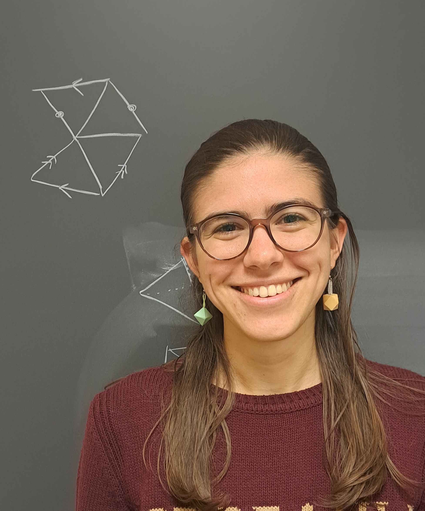

Hello, I'm Giorgia Benassi.
I'm a PhD student in Mathematics at Scuola Normale Superiore in Pisa, under the supervision of Prof. Bruno Martelli.
I study 4-dimensional triangulations of manifolds and orbifolds, and their geometric structures.